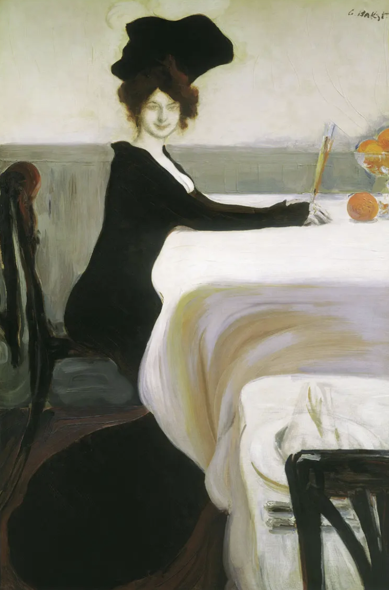

I-330

Fig. 1. Dinner (artist Leon Bakst, 1902)
A good example of modernist ambiguity
What/who is for dinner?
something on the table or maybe you are for dinner?
:) Think about I-330 and
read the realist art critic's negative response to the painting.
Vladimir Stasov criticized Bakst’s Dinner, leaving no stone unturned. He called the woman “a cat in a lady’s dress”,
and the picture itself — an unbearable thing.
“...Her muzzle is round plate-shaped, wearing some kind of horned headdress;
the skinny paws in ladies’ sleeves are stretched out to the table, but she herself looks away,
as if the dishes placed in front of her do not match her taste,
and she needs to steal something else from the side;
her waist, her whole body and figure are feline,
as disgusting as those of Beardsley, the English poseur and freak.”
By looking directly outward, the femme fatale reclaims visual agency, unsettling and perhaps objectifying the male gaze itself.